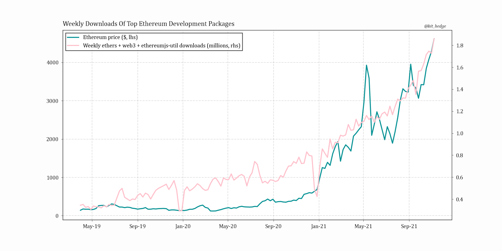
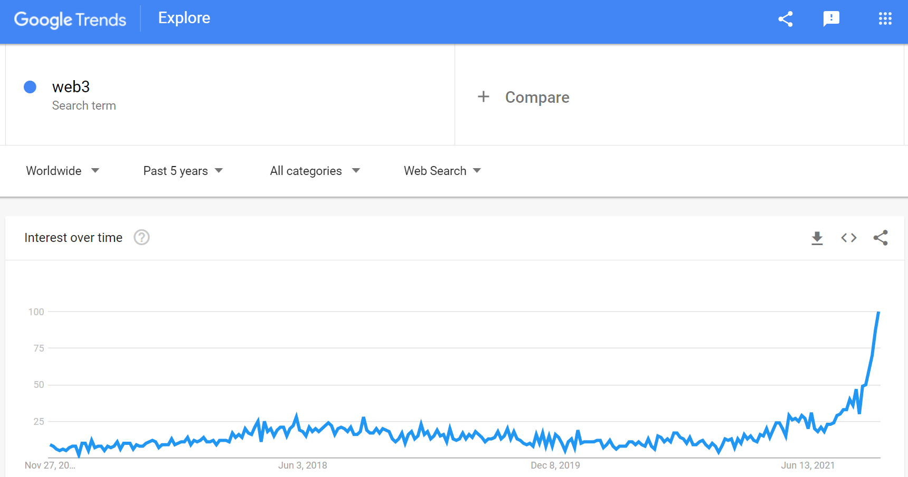
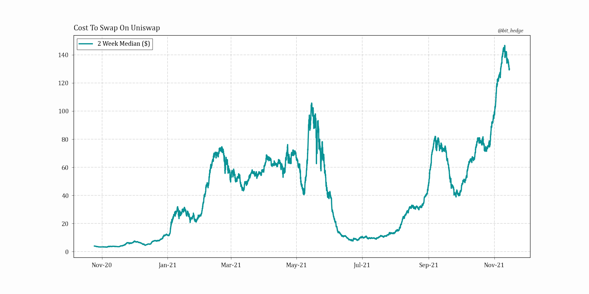

November 21st, 5:42pm nyc time, 2021.
Behind all the flashing lights Ethereum is being valued as a network, a payment system, a world computer, a currency; and adoption is the measurement of success...
So while the crypto market may already pay what many traditional investors would call far too little attention to fundamentals like address growth and user activity, it pays even less attention to the other side of the equation - builders - who certainly have now become unduly disregarded when crowds cheer on their attack by speculators?
And although many in crypto have already moved on to the next shiny object (‘DeFi? that’s so last month!’), smart contracts and trustless economies have only just begun to truly captivate Wall Street and ‘old money’, with charts like the below recently making a surge of appearances in Goldman, JPM, and other investment bank research notes.
Imagine Morgan Stanley putting out something from ‘Defi Llama’ a year ago…
Responsible for such applications on Ethereum are of course those often ignored builders, who, largely unnoticed by the masses, have been accelerating their efforts lately:
Weekly downloads are not necessarily unique downloads - interpret the numbers relatively.
If Ethereum’s ‘killer app’ has yet to be made, many are scrambling to make it. Indeed the above chart may be one of the simplest bull cases for the network, framing the asset more directly as a bet on the talent behind it and that current problems (like astronomical transaction costs) will eventually fall to the tidal wave of intelligence flooding into the space.
Quantifiable developer activity is a mistake to ignore as a factor in evaluating the network. And while this site is perhaps the first to point out and suggest deriving valuations from the factor as measured by development package downloads, undoubtedly others will take notice in the near future and design better ways to measure it (and 12 months later it will feature in the same reports mentioned above).
Regardless of new applications however, further adoption will continue to be bottlenecked by a cost of use that just about robs anyone transacting with less than five figures.
Concerningly, following EIP-1559 Ethereum holders who do not actually use any apps are directly enriched by higher gas costs at stable usage via a ‘burn’ mechanism, which has now burned a whopping $4 billion ETH. The contradiction arguably threatens one of the main ethos of crypto: aligned incentives of users and owners.
How big does a transaction have to be for a $140 fee to be reasonable?
Whatever the solution may be, as some jump ship to competing blockchains it’s apparent to this author that Ethereum’s developer base has already reached critical mass and the network will eventually surpass the value of Bitcoin and even Amazon as it becomes a decentralized AWS for the world. But for the time being, insane fees are nothing short of a life-threatening issue.
All eyes are on Layer 2 projects like Arbitrum, Optimism, and zkSync, whose successes certainly feel like they could make or break the future of the network...